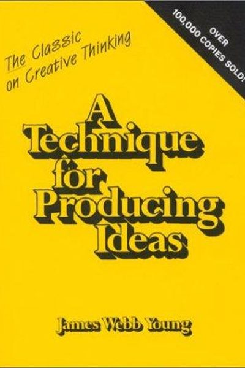

Library › Creativity
A Technique for Producing Ideas — Summary & Key Lessons

The 50-page advertising classic that explains — step by step — how ideas are actually born.
📖 OPEN THE FULL INTERACTIVE BREAKDOWN →🌐 Read it in Hindi, Hinglish, Gujarati, Tamil & 22 more languages — free, with audio.
💡 The Big Idea
In this tiny 1965 classic, ad man James Webb Young claims ideas are not magical flashes — they are new combinations of old elements, produced by a repeatable 5-step process: gather raw material, digest it, drop it, let it incubate, and catch the idea when it surfaces. The book is 50 pages because the process is simple; the magic is in the discipline of the first two steps.
🧠 The 5 Key Lessons
Lesson 1: Ideas Are New Combinations of Old Elements
The Formula
Young's core claim: no idea is entirely new. Every creative breakthrough is a recombination of existing elements — the talent lies in seeing relationships between facts that others keep apart. This is liberating: if ideas are combinations, then anyone with enough material and practice can produce them.
📖 Example: The printing press combined wine-press mechanics with coin-stamping; the iPod combined an MP3 player with a scroll wheel and iTunes. Nothing in the mix was new — the combination was. Read the full example →
⚡ Do this: Next time you love an idea, dissect it: what two old things did it combine? Then try combining two things from your own field that 'don't go together.'
Lesson 2: Gather Raw Material — Specific and General
Step 1: Gathering
Ideas need raw material: specific material about your problem (the product, the audience, the data) and general material about life (history, psychology, art, random facts). The general store is what lets you see beyond your industry. Young says most people fail here — they try to produce ideas from an empty pantry.
📖 Example: The great Mad Men-era copywriters Young trained were obsessive readers — of novels, science, newspapers, anything. When a client asked about milk, they could pull analogies from geology, poetry and farming, not just dairy marketing. Read the full example →
⚡ Do this: Start two notebooks: 'Specific' (everything about your current problem) and 'General' (interesting facts, quotes, observations). Fill both for 7 days before your next idea hunt.
Lesson 3: Digest the Material
Step 2: Digestion
Now you chew: examine your facts from every angle, turn them around, feel their weight, mash them together. Young describes the process as literally working the material in your mind — 'taking the different facts and trying to see how they fit' — until your mind is exhausted and a vague, partial idea starts to form. Do not settle for that first half-idea.
📖 Example: A young copywriter Young coached spent days arranging product facts into every conceivable pattern before the 'big idea' surfaced — the arrangement work, not luck, had produced it. Read the full example →
⚡ Do this: Block one hour where you physically arrange your notes — cut them up, shuffle them, pair random ones. Write down every partial connection, even ugly ones.
Lesson 4: Drop It: Let the Unconscious Work
Steps 3–4: Incubation
The third step is to drop the problem entirely and do something that excites and distracts you — music, a walk, a film. While your conscious mind is elsewhere, the unconscious keeps combining the digested material. Young insists this is a real stage of the process, not a luxury: forcing ideas after exhaustion produces only stale ones.
📖 Example: Young tells of copywriters who 'got the idea' in the bath, on the train, mid-conversation — after the pantry was full and the chewing was done. The classic incubation stories of Archimedes' bathtub and Newton's apple follow the same pattern. Read the full example →
⚡ Do this: After your digestion session, schedule 24–48 hours away from the problem — genuinely away. Note what your mind hands you when you're not looking.
Lesson 5: The Sudden Appearance — and the Reality Check
Steps 4–5: Birth and Testing
The idea arrives suddenly — often when you least expect it. But Young adds the forgotten final step: submit the newborn idea to reality. Test it against your material, your audience and the constraints, because the first happy flash is not always the right one — and be ready to repeat the cycle if it fails.
📖 Example: Young describes junior creatives who fell in love with the first idea that 'popped' — and seniors who routinely killed their own favourite flashes after testing them against the brief. The winners were the ones willing to restart the machine. Read the full example →
⚡ Do this: Before acting on your next 'Eureka!', write a one-paragraph test: who is it for, why would they care, what could be wrong with it? Adjust or restart honestly.
✅ 5-Step Action Plan
- Keep two notebooks — Specific and General — and fill them for a week.
- Block one hour to physically arrange and mash your material.
- Schedule 48 hours of genuine incubation away from the problem.
- Capture the 'sudden appearance' the moment it arrives.
- Test the idea against reality before committing — and be ready to restart.
⚠️ When This Doesn't Work
Young's 'ideas are combinations of old elements' is the classic creativity method — and General Magic is its warning: the most brilliant idea-combiners of the 1990s — Apple's exiled geniuses who combined the phone, the computer and the network into the smartphone a decade early — produced the right idea and still failed, because producing ideas is the easy half. The book stops at 'have the idea'; the graveyard is full of people who had it first and died anyway. Combination produces ideas; production produces companies.
💀 The Graveyard Proves It
🪄 General Magic — The iPhone, Built 15 Years Too Early by the Wrong Decade. Burn: $90M+; the future, mistimed. Read the full case study →
💬 Best Quotes from A Technique for Producing Ideas
- “An idea is nothing more nor less than a new combination of old elements.”
- “The capacity to bring old elements into new combinations depends largely on the ability to see relationships.”
- “Ideas are the result of a special process — not of a mysterious gift.”
Interactive version: mark lessons as read, listen in your language, share quote cards.